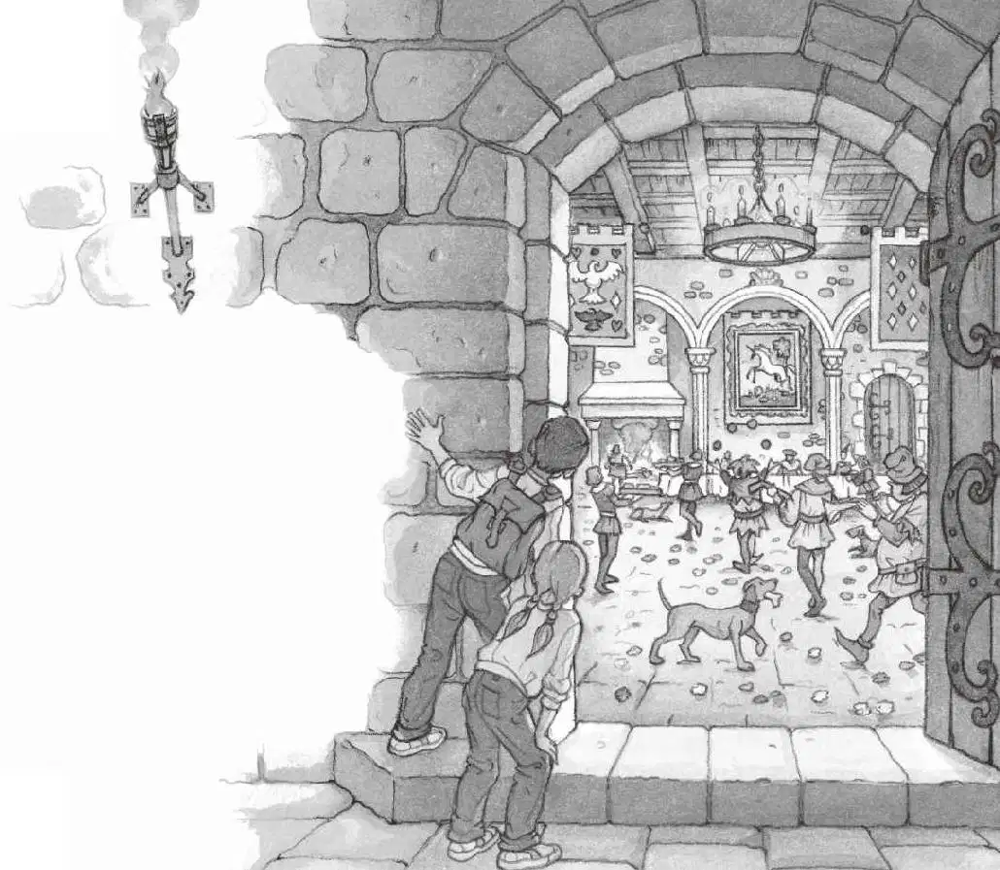
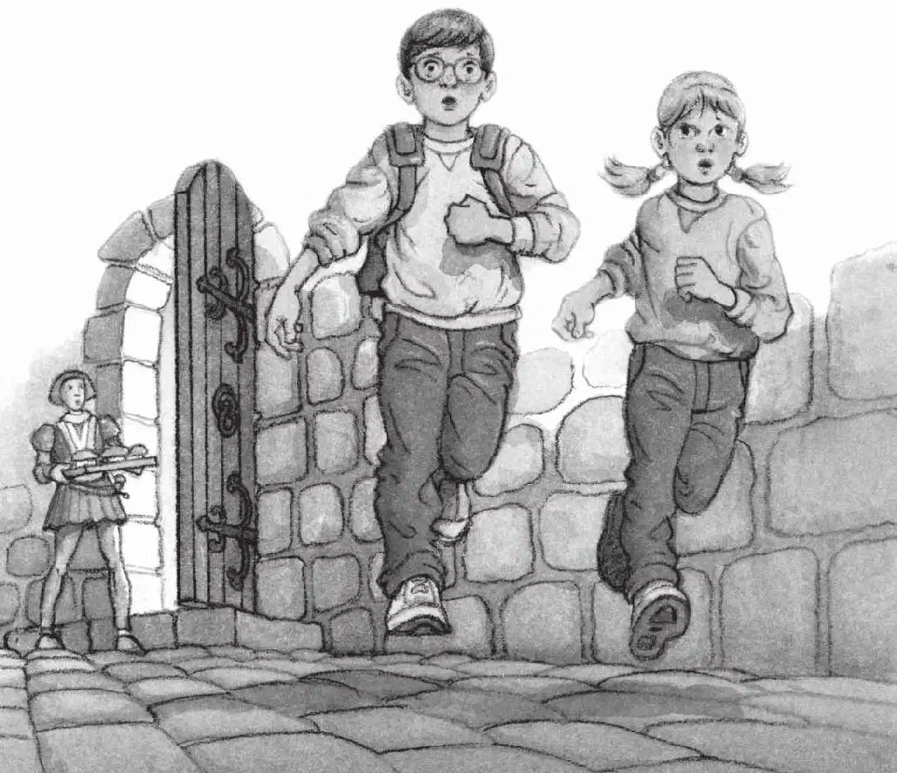

“真拿她没办法。”杰克嘟囔道。
杰克把自己的东西装进书包，悄悄地朝吊桥走去。
他希望自己没有被别人发现。
天色越来越黑，现在肯定已经是晚上了。
杰克来到吊桥前，开始过桥。木板在他脚下发出吱吱嘎嘎的声音。
他从桥边向下望，心想：“护城河里会有鳄鱼吗？”
“站住！”有人大喊。
城墙顶上，一个卫兵正看着下面。
杰克拔腿就跑。他穿过吊桥和城堡大门，一下子冲进了庭院。这时，他听见了从城堡里传来的音乐声、大喊声和欢笑声。
杰克匆匆跑进漆黑的走廊，蹲下身来。
他一边瑟瑟发抖，一边四处寻找安妮的身影。
火把照亮了庭院四周高高的围墙，庭院里几乎没什么人。
只有两个男孩牵着两匹马，嗒嗒地走在灰色的鹅卵石路上，其中有一匹就是那名骑士的黑马。
“喂！杰克！我在这儿呢。”安妮喊道。
杰克顺着声音，在黑暗中仔细看了看。
是安妮。
她藏在庭院中间的一口井后面，正朝杰克招手呢。
杰克也朝安妮招招手。
等男孩和马都消失在马厩里时，杰克赶紧跑向安妮。
“我要去找音乐声，”安妮悄声说，“你也一起来吧？”
杰克叹了口气，说：“好吧。”
他们踮着脚，悄悄地走过鹅卵石小路，随后便闪身溜进了城堡的大门。
嘈杂声和音乐声是从他们面前的一个房间传来的。
房间里灯火通明。
他们站在大门的一侧，朝里面张望。
“宴会是在大礼堂举行的。”杰克低声说。
他不由得屏住了呼吸，充满敬畏地注视着屋内。
在喧闹的房间那头，巨大的壁炉里正燃烧着旺火。
石墙上挂着鹿角和壁毯，地上撒满了鲜花。
一些穿着鲜艳衣服、戴着滑稽帽子的人，漫步在人群中。他们有的在弹怪模怪样的吉他，有的在往空中抛球，有的把宝剑顶在自己的手上。
穿短装的男孩们手里端着大托盘，托盘里装满了食物。狗叼着骨头到处乱跑。穿着斗篷和毛皮大衣的男男女女，坐在几张拥挤的木头长桌周围。
“不知道哪位是刚才那名骑士。”杰克说。
“我也不知道。”安妮轻声说，“可是他们怎么用手拿东西吃呀！”
突然，身后有人大喊。
杰克猛地转过身。

一个男人站在几步开外，手里端着一托盘馅饼。
那个男人冲着杰克和安妮气呼呼地问：“尔等何人？”
“杰克。”杰克尖着嗓子说。
“安妮。”安妮也尖着嗓子说。
说完，他们拔腿就跑。
他们以最快的速度冲进了一条光线昏暗的走廊里。
